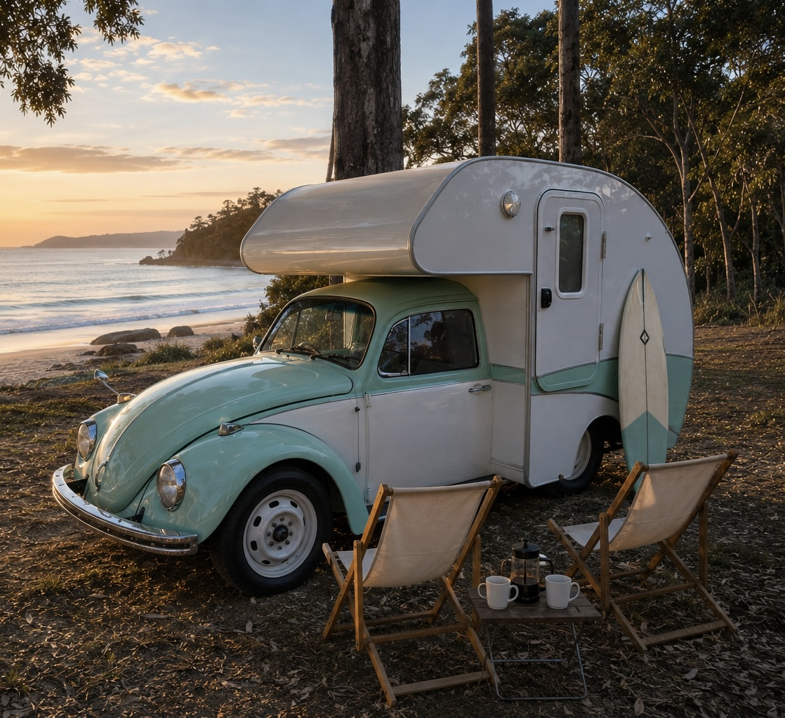
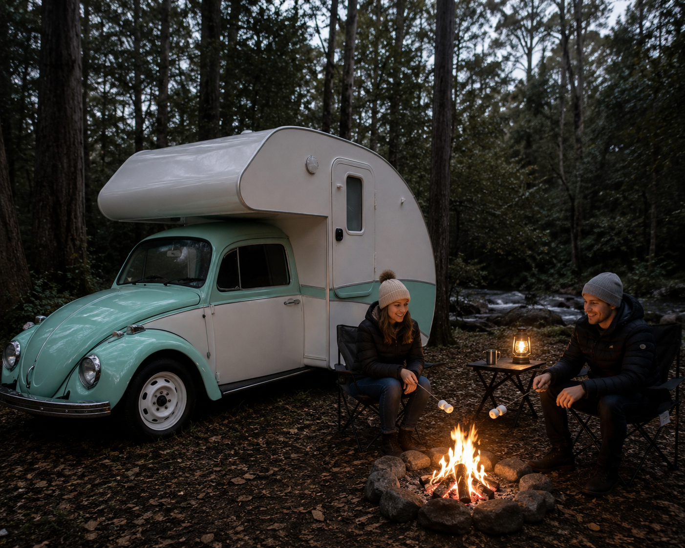

RETRO COASTAL ESCAPE
A beautifully restored 1968 Volkswagen Beetle paired with a custom teardrop camper. Designed for relaxed road trips, beachside mornings, coffee stops and unforgettable weekend escapes.
Join The WaitlistBedbug began life as a classic 1968 Volkswagen Beetle before being transformed into one of Australia's most unique getaway vehicles.
Combining timeless Volkswagen styling with modern engineering, Bedbug now features a reliable 2.0 litre Subaru engine conversion, upgraded braking system and improved suspension package.
The goal was simple: create the perfect retro adventure vehicle that offers the charm of vintage motoring while delivering the reliability and comfort needed for modern travel.
✔ Unique Retro Styling
✔ Comfortable Weekend Getaways
✔ Subaru Reliability
✔ Upgraded Suspension & Brakes
✔ Standalone Battery Management System
✔ Perfect For Coastal Adventures



Modern performance and reliability while retaining the classic Volkswagen character.
Improved stopping power and safety for touring and highway driving.
Designed to provide a smoother and more comfortable ride.
Standalone battery system powering lights, fridge and water systems.
Connect to powered sites while preserving battery capacity.
Unlike anything else on Australian roads or campgrounds.
Join Adventure Club Australia and be among the first to access Bedbug and future fleet vehicles.
Become A Founding Member